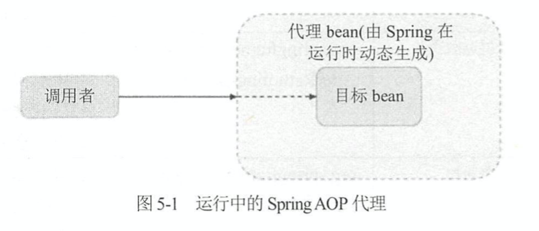
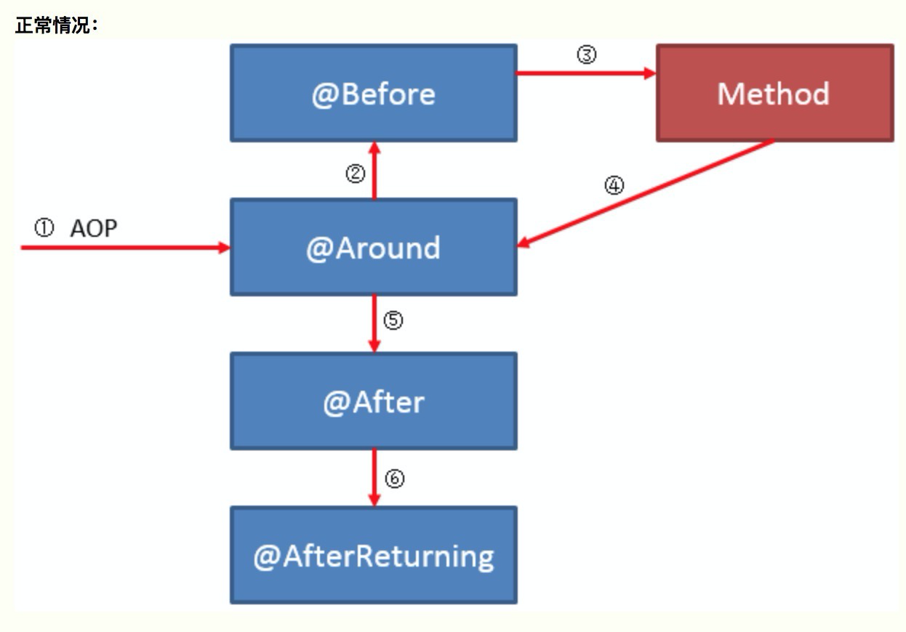
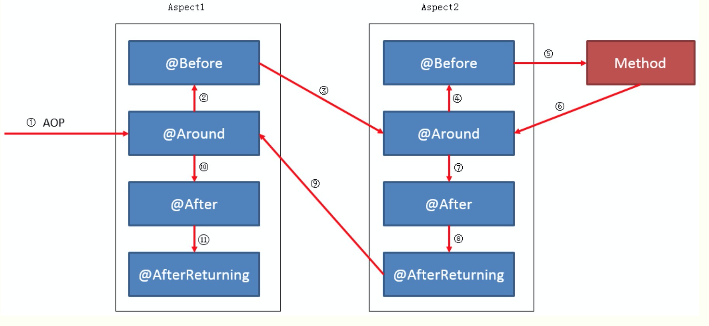

本文内容
AOP 概念
以下是 AOP 的核心概念：
- 连接点(joinpoint)：连接点是应用程序执行期间明确的一个点，比如方法调用、类初始化、对象实例化等。可以理解为一个时间点，我们的 AOP 就是定义在这个到了时间点上的时候想要做些什么（典型案例就是：方法调用的时候记录日志）。Spring只支持方法类型的连接点，所以在Spring中连接点指的就是被拦截到的方法，实际上连接点还可以是字段或者构造器
- 通知(advice)：所谓通知指的就是拦截到连接点之后要执行的代码，通知分为前置、后置、异常、后置返回、环绕、引入通知六类
- 切入点(pointcut)：切入点是一个用来选择什么时候执行通知的定义。我们创建一个切入点，其实就是从连接点中选择出一些符合我们的条件的连接点，我们的通知只在这些被选中的连接点上执行，而不是所有的连接点都执行
- 切面(aspect)：切面是封装在类中的通知和切入点的组合，这种组合定义了应该被执行的位置和执行的逻辑。简单说就是，切面包含两个方面：在哪里执行这些代码、以及这些代码具体的逻辑
- 织入(weaving)：将通知添加到目标类的具体连接点上的过程。这个过程不是我们处理的，而是 AOP 框架处理的。对于 AspectJ 来说，它有单独的编译器对 AOP 进行编译，实际上来说已经有点改变了 Java 语法，这是编译器织入的方式。对于 Spring AOP 来说，是通过动态代理来进行织入的，是一种运行时织入的方式，使用的是纯粹的 Java 方式，不需要单独编译
- 目标对象(target)：被 AOP 修改了的对象，也就是被通知(advised)的对象
- 引入(introduction)：这是通过引入其它方法或者字段，来修改类的结构的过程。通过引入的方式，我们可以在运行时让任何的类实现任何的接口，而不需要该类显示的实现该接口。简单来说，引入修改了类的结构，改变了字段或者方法。
连接点和切入点的区别：
我们去餐厅吃饭的时候，连接点就像是菜单上的菜名，而切入点则是我们想要选择的菜的想法。
例如：我想要所有的牛肉做成的菜，这句话就是一个切入点。这个切入点可能从菜单上（所有的连接点组成的集合）筛选出了某几个连接点（比如选出了：小炒黄牛肉、凉拌牛肉）
可以这样理解：
- 在 spring AOP 中，连接点就是所有的方法调用的集合
- 而切入点就是我们定义的表达式，这个表达式的作用是说明：我想要选择中哪些方法。最终这个切入点就定义了一些连接点的集合
- 所以一般来说我们只需要定义切入点即可
Spring 编码式 AOP
Spring 支持 aopaliance 这种通用 AOP 标准，因此我们可以先写一个这种编码式的 AOP 来体验一下 Spring 中的 AOP 使用过程
public class JavaDemoApplication {
static class RealServe {
public String serve() {
System.out.println("原始对象运行");
return "原始对象";
}
}
//import org.aopalliance.intercept.MethodInterceptor;
// 这个是一个 AOP 标准，使用这个标准实现的 AOP 可以运行在别的 AOP 框架下
static class RealServeDecorator implements MethodInterceptor {
@Override
public Object invoke(MethodInvocation invocation) throws Throwable {
System.out.print("插入到前面的AOP，");
Object result = invocation.proceed();
System.out.println("返回值是：" + result);
return result;
}
}
public static void main(String[] args) {
RealServe realServe = new RealServe();
ProxyFactory pf = new ProxyFactory();
pf.addAdvice(new RealServeDecorator());
pf.setTarget(realServe);
RealServe realServeProxy = (RealServe) pf.getProxy();
realServeProxy.serve();
}
}
import org.aopalliance.intercept.MethodInterceptor;- 这是 AOP 的一种通用标准
ProxyFactoryProxyFactory pf = new ProxyFactory(); pf.addAdvice(new RealServeDecorator()); pf.setTarget(realServe); RealServe realServeProxy = (RealServe) pf.getProxy();- Spring 提供的代理工厂
Spring AOP架构
Spring AOP 的实现方式是基于代理的，也就是生成原始对象的代理对象，AOP 的逻辑都封装在了代理对象里，我们在调用 bean 的逻辑的时候，实际上访问到的都是代理之后的 bean。

在运行时，Spring 会分析我们为 bean 定义的切入点，并且动态生成代理 bean，此时，不会直接调用目标 bean，而是将调用者注入代理 bean。
Spring AOP 的代理有两种实现方式：CGLIB 和 JDK 动态代理。默认情况下：
- 当被通知的目标对象实现一个接口时，使用 JDK 动态代理
- 当目标对象没有实现接口时，使用 CGLIB 代理
Spring AOP 中的连接点
Spring AOP 中的连接点只支持方法调用，绝大部分情况下这种就够用了。如果想要更多的连接点，应该使用 AspectJ，AspectJ 和 Spring AOP 是可以一起用的
Spring AOP 中的切面
在 Spring AOP 中，切面由实现了 Advisor 接口的类的实例表示。Spring 提供了一些可以复用的 Advisor 实现。Advisor 有两个子接口：PointcutAdvisor、IntroductionAdvisor
所有的 Advisor 实现都实现了 PointcutAdvisor 接口，这些实现使用切入点来控制要作用于哪些连接点。在 Spring 中，IntroductionAdvisor 被视为特殊类型的通知。
关于 ProxyFactory 类
ProxyFactory 类的作用：
- 控制织入和代理的创建的过程
- 使用 setTarget 表示被代理的是哪个对象
- 在内部将代理对象的创建过程交给了 cglib 或者 jdk 动态代理，具体是哪一个，取决于应用的配置
- 使用 addAdvice 将通知应用于这个对象的所有方法调用，而不是有选择的应用，在内部使用的是一个默认的切入点，这个切入点包含了所有的连接点（也就是所有的方法调用）
- 当想要更多的控制所创建的 advisor 或者想要向代理添加引入时，可以自己创建 Advisor 并且使用 ProxyFactory 的 addAdvisor 方法（其实就是添加切面啦，切面里包含有切入点和通知，所以可以控制向目标对象哪些方法进行通知）
Spring AOP 的六种通知
- 前置通知
- org.springframework.aop.MethodBeforeAdvice
- 可以在连接点执行之前执行，也就是在被代理的方法执行之前进行执行。前置通知可以访问被代理的方法，但是无法控制方法本身的执行，如果前置通知抛出异常，那么拦截器链条的进一步执行会终止，并且将异常传回给拦截器链条。也就是说，可以通过抛出异常的方式来终止代理方法的执行
- 后置返回通知
- org.springframework.aop.AfterReturningAdvice
- 在连接点的方法调用完成并且返回之后执行，它可以访问被调用的方法、参数和它的返回值。此时方法已经调用完成，所以无法阻止方法的执行。如果目标方法抛出异常，则不会执行这个通知。并且异常将会照常传回调用堆栈
- 后置通知
- org.springframework.aop.AfterAdvice
- 仅当被通知方法正常完成时才执行后置通知，无论被通知方法的执行结果是什么，都会执行后置通知，即使抛出异常也会执行这个通知
- 环绕通知
- org.aopalliance.intercept.MethodInterceptor
- 在 Spring 中，环绕通知使用方法拦截器的 aopalliance 标准进行建模。环绕通知允许在方法调用之前和调用之后执行，并且可以控制方法的调用，控制返回值，如果需要的话可以完全绕过该方法，自己实现相应的逻辑
- 异常通知
- org.springframework.aop.ThrowsAdvice
- 异常通知在方法调用返回后执行，但是只有抛出异常的时候才执行。异常通知只能捕获特定的异常。使用异常通知可以访问抛出异常的方法、传递给调用的参数以及调用的目标
- 引入通知
- org.springframework.aop.IntroductionInterceptor
- Spring 将引入建模为特殊类型的拦截器。通过使用引入拦截器，可以指定由引入通知引入的方法的实现
Spring boot AOP 的使用
Maven 引入 spring-boot-starter-aop 依赖
<dependency> <groupId>org.springframework.boot</groupId> <artifactId>spring-boot-starter-aop</artifactId> </dependency>在 application.properties 中配置启用 AOP
spring.aop.auto=true spring.aop.proxy-target-class=true- 第一个配置表示：启用 AOP 功能
- 第二个配置表示：强制使用 CGLIB 来进行动态代理
使用 @Aspect 定义切面，切面里包含切入点和通知
前面两项就不多说了，直接从后面的 demo 示例开始写
定义一个即将被增强的bean
// 我们的通知主要集中在这个接口的 sayHello 方法
public interface DemoService {
String sayHello(String name);
}
// 这个接口用来介绍引入型通知的功能
public interface MoreService {
String more();
}
// 引入型通知调用接口时的底层实现
public class MoreServiceImpl implements MoreService {
@Override
public String more() {
System.out.println("增加的功能");
return "增加功能";
}
}
// 这个方法有一定的几率抛出异常
@Service
public class DemoServiceImpl implements DemoService {
@Override
public String sayHello(String name) {
System.out.println("你好，" + name);
if (System.nanoTime() % 2 == 0) {
System.out.println("本次执行发生了异常");
throw new RuntimeException("本次执行发生了异常");
}
return name;
}
}
以上是一个简单的 service。
注意一个很重要的事情：Spring AOP 一定是对 bean 进行增强，我们所要代理的类，必须在容器中有实例
定义一个切面
@Aspect
@Component
@Order(1)
public class DemoAspect {
// 引入型通知
@DeclareParents(
value = "com.example.javademo.service.DemoServiceImpl", // 被增强的类
defaultImpl = MoreServiceImpl.class // 使用什么实现来增强
)
private MoreService moreService; // 表示想要增加的接口
@Pointcut("execution(* com.example.javademo.service.DemoServiceImpl.sayHello(..))")
public void sayHelloPoint() {
}
@Before("sayHelloPoint() && args(name)") // args(name) 表示获取这个方法的第一个参数，参数名称并不一定要叫做 name
public void cBefore(JoinPoint joinPoint, String name) {
System.out.println("name参数是：" + name);
System.out.println("sayHelloPoint 调用之前3");
System.out.println("参数是：" + Arrays.stream(joinPoint.getArgs()) //获取方法参数
.map(str -> (String) str)
.collect(Collectors.joining()));
}
@Before("sayHelloPoint()")
public void aBefore() {
System.out.println("sayHelloPoint 调用之前1");
}
@Before("sayHelloPoint()")
public void bBefore() {
System.out.println("sayHelloPoint 调用之前2");
}
@Around("sayHelloPoint()")
public Object around(ProceedingJoinPoint joinPoint) throws Throwable {
System.out.println("sayHelloPoint 调用之前环绕");
Object result = joinPoint.proceed();
System.out.println("sayHelloPoint 调用之后环绕");
return result; // 这里我们可以修改函数的返回值，如果返回其它的结果，函数返回值就被修改了
}
// 环绕类型传入的参数应该是 ProceedingJoinPoint
@Around("sayHelloPoint()")
public Object around2(ProceedingJoinPoint joinPoint) throws Throwable {
System.out.println("sayHelloPoint 调用之前环绕2");
Object result = joinPoint.proceed(); // 继续调用原始对象的方法，我们可以修改它的入参
System.out.println("sayHelloPoint 调用之后环绕2");
return result; // 这里我们可以修改函数的返回值，如果返回其它的结果，函数返回值就被修改了
}
@After("sayHelloPoint()")
public void after() {
System.out.println("sayHelloPoint 调用之后");
}
@AfterReturning("sayHelloPoint()")
public void afterReturning() {
System.out.println("sayHelloPoint 调用并且返回之后，抛出异常则不执行这里了");
}
@AfterThrowing("sayHelloPoint()")
public void afterThrowing() {
System.out.println("sayHelloPoint 调用抛出异常后执行这里");
}
}
main 方法和输出
public static void main(String[] args) {
ConfigurableApplicationContext context = SpringApplication.run(JavaDemoApplication.class, args);
DemoService demoService = context.getBean(DemoService.class);
MoreService moreService = (MoreService)demoService;
demoService.sayHello("岑志鹏");
moreService.more();
}
没有异常的时候的输出如下
sayHelloPoint 调用之前环绕
sayHelloPoint 调用之前环绕2
sayHelloPoint 调用之前1
sayHelloPoint 调用之前2
name参数是：岑志鹏
sayHelloPoint 调用之前3
参数是：岑志鹏
你好，岑志鹏
sayHelloPoint 调用之后环绕2
sayHelloPoint 调用之后环绕
sayHelloPoint 调用之后
sayHelloPoint 调用并且返回之后，抛出异常则不执行这里了
增加的功能
抛出异常的时候的输出如下
sayHelloPoint 调用之前环绕
sayHelloPoint 调用之前环绕2
sayHelloPoint 调用之前1
sayHelloPoint 调用之前2
name参数是：岑志鹏
sayHelloPoint 调用之前3
参数是：岑志鹏
你好，岑志鹏
本次执行发生了异常
sayHelloPoint 调用之后
sayHelloPoint 调用抛出异常后执行这里
Exception in thread "main" java.lang.RuntimeException: 本次执行发生了异常
下面的内容进行详细分析这个切面的工作机制
切面用到的注解
Component
- 这个是 Spring 容器所需要的注解，如果不定义这个注解，Spring 容器不会将切面生效，因为容器里没扫描这个切面的 bean
Aspect
- 这个是真正定义切面的注解，用来提醒 Spring AOP，这个被注解的类是一个切面
@Order(1)- 这个注解不是必须的
- 这个注解用来定义切面的优先级，数字越小，优先级越高
- 当有多个切面的时候，如果没有添加 Order 注解，不同的切面的优先级是未定义的
@Pointcut("execution(* com.example.javademo.service.DemoServiceImpl.sayHello(..))")- 这个是定义切入点的注解，使用的是 execution 表达式
execution(* com.example.javademo.service.DemoServiceImpl.sayHello(..))- 这里开头的 * 号表示：任何任何类型的返回值，也就是任何方法都匹配，我们也可以匹配一个特别的类型比如说 String
com.example.javademo.service.DemoServiceImpl.sayHello表示：匹配这个包名这个类的这个 sayHello 方法，对这个方法做增强sayHello(..)这里的两个点号表示匹配的方法可以具有任何参数，也就是所有重载的 sayHello 方法都匹配的上，我们也可以匹配某个特定签名的方法
@Around("sayHelloPoint()")- 这个是定义环绕通知的注解，表示在方法执行过程中所要进行的操作
sayHelloPoint()这个是之前的 @PointCut 注解修饰的方法，用来代指这个切入点，表示这个环绕通知要应用在这个切入点之上
@Before("sayHelloPoint()")- 这个是定义前置通知的注解，表示在方法执行之前所要进行的操作
sayHelloPoint()含义如上
@After("sayHelloPoint()")- 这个是定义后置通知的注解，表示在方法执行之后所要进行的操作
@AfterReturning("sayHelloPoint()")- 这个是定义后置返回通知的注解，表示在方法执行并且返回之后所要进行的操作
- 如果方法抛出了异常，那么这个通知就不会再执行了
@AfterThrowing("sayHelloPoint()")- 这个是定义异常通知的注解，表示在方法抛出异常之后所要进行的操作
- 如果方法没抛出异常，这个通知不会执行
- 可以看出
AfterThrowing和AfterReturning只会执行其中的一个
引入型通知
// 引入型通知 @DeclareParents( value = "com.example.javademo.service.DemoServiceImpl", // 被增强的类 defaultImpl = MoreServiceImpl.class // 使用什么实现来增强 ) private MoreService moreService; // 表示想要增加的接口- 使用 @DeclareParents 注解来定义引入型通知
- value 参数表示：我们想要哪个类被增强。被增强的这个类将会增加新的接口实现。如果添加了 加号，例如
DemoServiceImpl+，在 springboot 2 之后，表示增加它的子类，但是不包含这个类自身 private MoreService moreService;表示我们想要上面 value 这个被增强的类增加什么接口。这里表示说：我们想要让 DemoServiceImpl 多实现一个 MoreService 接口- defaultImpl 参数表示：DemoServiceImpl 多实现的这个 MoreService 接口，具体的方法是由谁来执行的。因为 DemoServiceImpl 本身是没有实现 MoreService 接口的，所以当我们调用 DemoServiceImpl 关于 MoreService 的接口方法时，需要一个底层的方法实现，这个实现就是 defaultImpl 定义的 MoreServiceImpl
切面的执行顺序
相同类型通知的执行顺序
参考：https://segmentfault.com/a/1190000011283029
在我们上面的切面示例中，有 3 个前置通知，它们的顺序是有定义的，是按照通知的方法名字排序的，参考 ReflectiveAspectJAdvisorFactory.getAdvisorMethods(..)方法 ，里面有一行是 methods.sort(METHOD_COMPARATOR);，这里的比较器就是通过方法名进行排序的。
在我们的切面示例中，3 个前置通知的方法名分别是：aBefore、bBefore、cBefore
最后的执行顺序也是按照这个方法名的字符排序来的，小的在前面，所以 aBefore 是最先执行的
因此，在同一个切面中，相同类型的通知（前置、后置等叫做类型），是按照方法名进行排序的
单个切面不同类型通知的执行顺序

环绕通知分为三个部分：
- 调用
proceedJoinPoint.proceed()之前的代码部分 - 调用
proceedJoinPoint.proceed()的部分 - 调用
proceedJoinPoint.proceed()之后的代码部分
在环绕通知确实调用了 proceedJoinPoint.proceed() 的情况下，顺序是这样的：
- 环绕通知中，调用
proceedJoinPoint.proceed()之前的代码部分 - 所有的前置通知
- 环绕通知中，调用
proceedJoinPoint.proceed()的部分 - 所有的后置通知
- 所有的后置返回通知/异常通知 （这两种通知是互斥的，只有一种执行）
在环绕通知没有调用
proceedJoinPoint.proceed()的情况下，顺序与上面几乎一致，唯一的区别就是：所有的前置通知都取消了，也就是前置通知统统不生效了。但是后置的那些通知是还生效的
不同切面的顺序

不同切面的优先级是不确定的，但是我们可以给切面添加 Order 注解来定义切面的优先级，Order 数字越小，优先级越高
不同切面的通知执行顺序如下：
- 高优先级的切面的环绕通知调用
proceedJoinPoint.proceed()之前的代码部分 - 高优先级的切面的前置通知
- 低优先级的切面的全部通知执行完成（按照上面单个切面不同类型通知的执行顺序进行执行）
- 高优先级的切面的环绕通知调用
proceedJoinPoint.proceed()的部分 - 高优先级的切面的所有的后置通知
- 高优先级的切面的所有的后置返回通知/异常通知
一句话概括就是：高优先级的切面执行环绕的前半部分以及前置通知，然后把低一级的切面全部执行完。回过头来再继续执行高优先级的切面。
也就是说：
- 高优先级的前半部分先执行，后半部分后执行
- 低优先级切面（称作第二级）之后如果还有更低一级别的切面（称作第三级别），则是递归这个过程。
- 第二级切面执行环绕的前半部分以及前置通知
- 把第三级的切面全部执行完
- 回过头来再继续执行第二级的切面
- 对于环绕通知，我们只需要在最低的那个级别的切面中调用
proceedJoinPoint.proceed()还有一种高优先级切面中环绕通知不执行
proceedJoinPoint.proceed()的情况：
- 这种情况下，由于
proceedJoinPoint.proceed()没有执行- 所以高优先级切片的前置通知也不会生效了
- 从而导致低优先级切面完全失效，任何通知都不起效（除了引入型通知）
- 相当于直接屏蔽了低优先级切面
另外，在多个环绕通知中调用
proceedJoinPoint.proceed()并不会导致被拦截的底层方法执行多次。底层方法只会执行一次，这里我们可以拿到返回值，然后将返回值不做修改返回出去，因此，每个环绕通知一般来说都要调用proceedJoinPoint.proceed()
切点表达式
参考：
通知的参数
如果你不想要参数的话，这些通知方法都可以不加参数
非环绕型通知：第一个参数都可以是 JoinPoint，后面的参数通过下面的方式获取
@Before("sayHelloPoint() && args(name)") // args(name) 表示获取这个被拦截的方法的第一个参数，参数名称并不一定要叫做 name public void cBefore(JoinPoint joinPoint, String name) { System.out.println("name参数是：" + name); System.out.println("sayHelloPoint 调用之前3"); System.out.println("参数是：" + Arrays.stream(joinPoint.getArgs()) //获取方法参数 .map(str -> (String) str) .collect(Collectors.joining())); }环绕型通知：第一个参数可以是 ProceedingJoinPoint，用来决定方法是否继续执行
AfterReturning 中可以添加 return 的名称，然后绑定在方法的入参里
AfterThrowing 中可以添加 throw 的名称，然后绑定在方法的入参里
最佳实践
- 尽量减少使用环绕通知
- 更多使用前置通知、后置通知等更加明确的通知范围